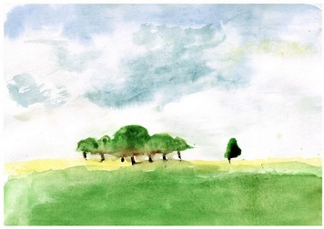
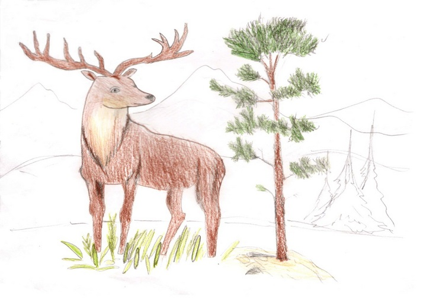
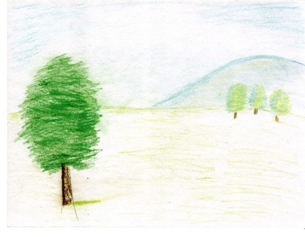
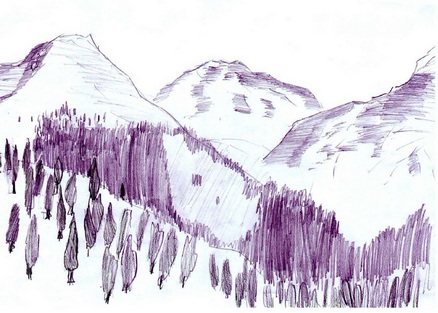
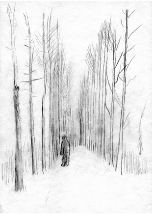

Вступление
В темноте и непонятной мгле все стояло неподвижно. Это было до начала Земли. Пока не было Земли и не было ничего, а только одна темнота и мгла. Мира не было.
Но вот в темноте что-то зашевелилось. Показался черный комок, который катался во мгле по ничему. Комок собрал тьму и собрался в форму клубка. Этот клубок был единственный живой предмет на свете. Он катался почти день, хотя дня и ночи в этой мгле еще не было. Вскоре этот клубок стал большой диаметром в рост человека. Вдруг он начал дребезжать и качаться. И тут он взорвался, но его нити не разлетелись во все стороны, а всполохнулись и образовали живую форму. Потом клубок взял объемную форму и создался Бог.
У него сразу появились ум, сила, голос и речь. Он говорит:

- Я сам себя сделал, сделал из ничего, и я буду иметь имя, мое имя Силпос. Я сделаю закон, - сказал он.
Вот его закон:
1. На свете должно быть существо с короткими волосами и его будут звать мужчиной, а существо с длинными волосами будут звать женщиной.
2. Между мужчиной и женщиной должна быть пара, что значит они должны жить вместе в дружбе и благодарности друг другу.
3. Семья – это значит мужчина, женщина и ребенок должны жить вместе и не ругаться.
- Да, я закон то придумал, но для кого, для себя что ли? Конечно же нет. Я должен сделать Богиню, богиню-жену
Бог Силпос долго думал, как сделать богиню-жену, хоть он сделал сам себя из ничего, а как сделать Богиню. Ведь ей надо дать магию и дух женщины, чтобы она родила четырех Богов, четырех наследников.
- Хорошо, а сейчас я делаю Богиню, и у меня будет семья.
Он собрал темноту и еще темноту и слепил из нее клубок. Потом Бог Силпос сделал восемь клубков собрал их сделал форму Богини, дунул и Богиня зашевелилась и начала ходить. Потом Силпос дунул еще раз и она начала говорить. У нее появился ум и она сказала:
- Ох, я могу уже говорить и думать. Это хорошо, но мне бы магию и божественную силу. Как вижу, ты меня сделал, то доделай меня.
Бог Силпос стукнул себя по голове и произнес:
- Что же я забыл дать божественную силу.
Он дунул еще раз, но силы было только чуть-чуть, он дунул на нее еще раз, и у нее стала божественная сила.
- Еще надо дух женщины дать тебе. Если ты не знаешь, что это такое – дух женщины, я тебе потом объясню, - сказал торопливо Силпос.
- Хорошо, потом скажешь, - сказала она.
Силпос еще раз дунул, самый последний раз и у нее появился дух женщины и красота.
- Сейчас все, - сказал довольный Силпос. – Теперь ты должна знать мой закон и мои правила.
- Хорошо говори свой закон, - ответила Силпосу она.
И он рассказал ей все, что надо было и о законе и о семье.
- Хорошо, ты сделал, ты придумал законы и значит, ты должен меня назвать.
- Хорошо, ты будешь называться … «Соляия».
Бог Силпос сказал, что он и она семья, только детей не хватает.
- Дети родятся, когда надо, - говорил Силпос.
Прошел день, хотя дня не было. Силпос дунул и сделал из темноты волшебные предметы и плащи. В конце концов ему надоело это делать, и он сказал:
- О всё! Теперь я сделаю помощников двух духов. Мне потребуется и твоя помощь, Соляия.
А в то время Соляия думала о детях и когда услышала, что Силпос сказал, то ответила:
- Ты смог меня сделать!? Сделать Богиню, но сделать двух духов не можешь.
- Я могу сделать духов, - сказал спокойно Силпос.
- Хорошо, я тебе помогу, - ответила Соляия спокойней.
Соляия взяла комок темноты и сделала клубок, и еще, и еще и таких клубков десять. Делать клубки ее научил Бог Силпос. Вскоре было сделано двадцать клубков. Бог Силпос поделил их поровну. Потом десять клубков он соединил в один большой клубок и произнес слова, постоял и начал ждать. Ждал он не долго и вдруг клубок взорвался, и дух заговорил каким-то чуть-чуть другим голосом:
- Сделал ты меня Бог Силпос, значит, я должен тебе служить, тем более я дух.
- Да ты прав, я тебя сделал, тем более ты мне очень понадобишься, а пока иди куда хочешь.
Дух поклонился и испарился, как полагается духу.
Также Бог Силпос сделал второго духа. Тот сказал те же самые слова и тоже испарился. Потом Бог Силпос сказал:
- Мы сделали духов, потом нам надо сделать три мира:
первый мир – мир Богов,
второй мир – мир духов и
третий мир – мир живых и умерших,
- Тебе понадобится моя помощь и помощь духов, - сказала Соляйя.
- Да, я духов созову, но и ты должна помочь, - сказал Силпос. И он хлопнул три раза. Перед ним показался один дух.
- Позови второго духа, - сказал Силпос серьезно.
- Хорошо, я повинуюсь, - сказал дух и поклонился.
Не успел Силпос глазом моргнуть перед ним стояли два духа.
- Теперь сделайте из темноты десять тысяч черных клубков, но клубки должны быть большими как я.
- Я повинуюсь, - сказал первый дух.
- Я тоже, - сказал второй дух и они исчезли во тьме, а Бог Силпос и Богиня Соляйя говорили какие-то слова.
Вскоре духи вернулись и перед ними лежало поле черных клубков. Силпос махнул рукой и перед ним показались три гигантский клубка. Бог Силпос и Богиня Соляия стала у одного клубка и начали что-то шептать, а потом сказали: «Мир богов». И они оказались в поле, а небо было чисто голубое, а трава такая мягкая, как софа. Но все равно в поле стояли два клубка. Тогда Силпос сказал духам:
- Возьмите этот мир и унесите подальше от этого места.
И они опять стояли в темноте, а рядом два клубка. Также поступили и с другим клубком. И этот мир духи унесли подальше. И с третьим миром поступили также.
- Сейчас только нужно, чтобы наши сыновья сделали наполнили третий мир, - сказал Бог Силпос.

Начало Земли
Так и жили Бог Силпос и Богиня Соляия. Было скучно и так как они жили во тьме и воздухе, предвигались они тоже во мгле. Однажды Cоляия родила 4 ребёнка. Были они 4 Бога. Росли они очень быстро, потому что они были Богами: один Бог был Бог воздуха, второй – Бог земли, третий – Бог воды и четвертый – Бог огня.
Были они сильны и могущественны почти как их отец, но однажды Бог Силпос и Богиня Соляия ушли в мир богов.
– И вот мы одни, – сказал Бог воздуха.
- Мне надоело жить в полной тьме и безвременном мраке. – сказал Бог Земли.
- Ты прав давай сделаем солнце и звезды, чтобы был свет и тепло. – сказал Бог воды.
- Да, – сказал Бог огня, который хотел сказать это первым.
- Да, – сказал Бог воздуха, немного подумав.
- Да, – сказал Бог земли.
И они начали делать солнце и звезды. Больше всего их делал Бог Огня.
- Не сделать ли нам землю, - вдруг сказал Бог Земли.
Все согласились. Все приложили свои силы. Бог Воды - океаны и моря. Бог Земли - почву и болота, пустыни. Бог Огня - вулканы и лаву. Бог Воздуха – ветер и воздух. Сделав это, они сделали коз, деревья, драконов и дальше.
В конце концов, трем Богам – Богам воздуха, земли и воды стало скучно и они уже хотели уходить в мир богов. И однажды они сказали Богу Огня:
- Мы будем уходить, и ты наверно тоже.
- Нет, - ответил Бог Огня.
- Хорошо, - сказал Бог Воды.
Но мы оставили наследников: племена магов и эльфов.
- Нет, - возразил Бог Огня.
- Нет, нет, нет, - завопил Бог Огня.
- Но мы так хотим, - сказал Бог Воды, а также я ещё и эльф.
- Нет, - сказал Бог Огня, - Нет.
И он поднял огонь в руках. Но Бог Воды успел кинуть воду в огонь и огонь начал потухивать.
- Ладно я уйду, - сказал Бог Огня и повернулся в сторону гор Хей Дулата.
- А мы будем делать хуслаев.
- Да, да, - закричали два Бога.
Хранители мира и покоя на земле
Боги вложили все свои силы, чтобы сделать хуслаев. Сначала мужчину и женщину, потом еще несколько хуслаев. Они сразу же побежали в пещеру.
- А не сделать ли еще племена, - сказал Бог Земли.
- Да можно, - сказал Бог Воды.
- Первое эльфов и каждый из них будет обладать силой и магией и магов тоже, - сказал Бог Воды.
Сделать магов и эльфов, было очень трудно, поэтому Боги начали вспоминать старые заклинания и сказав заклинания, они создали магов и эльфов. Первым был маг Синфин. Он повернулся к Богам, поклонился и ушел. С эльфами тоже самое, первый эльф был эльф Самир. Его род был предназначен стать хранителем мира. Потом они сделали маленьких хоббитов, умеющих прятаться очень хорошо.
- Ну ладно, мы уходим, - сказал Бог Воды, - сеч мир в на д рук.
И они исчезли.
Хуслаи делали какие-то хижины, эльфы делали деревянные заборы, а Cинфин ходил по холмам. Хоббиты рыли норы и их память была пуста. Поэтому они ничего не помнили и даже Синфин очень плохо. Это сделали Боги, чтобы они не помнили, кто их сделал. Если эльфов не убьют, они могут жить бесконечно и маги тоже. За этим всем следил Бог Огня. Он не ушел. Он сидел у подножия Хей Дулата и ворот Сохрияль.
«Я им задам хранителям мира, этим эльфам Самиру и роду Синфин» - он думал про себя.

Не спокойные дни на земле
Прошло много дней, как появился род Синфина, род Сор Билата и скалы Сутир. Хоббиты жили у реки Хойди. А хуслае становились с каждой неделей все темнее и темней, пока не стали людьми .
Но что-то часто появлялась буря в океане и взрывались вулканы далеко.
Один раз Сослай, а это был человек сказал:
- Мы хотим с вами объединиться, эльфы.
- И зачем? – спросил Самир, - зачем?
- Чтобы мы имели армию, - сказал Сослай.
- Еще рано, если вы будете делать войско, то кто ваш враг?
- Пока никто, - ответил Сослай, - но будет.
- Да! Да! - закричали люди.
- Да ты прав. И не одна война будет, но пока нет. Нет я не согласен.
Тут у людей поднялся шум. Некоторые кричали:
- За это мы отомстим! Мы не согласны! Тогда когда мы объединимся?
- Успокойтесь, - сказал Сослай.
Потому что некоторые люди поднимали копья и камни.
- Когда скажут великие боги, - ответил им Самир.
- И когда ваши великие боги дадут знак.
И людям в ответ поднялся громадный ветер, на реке стали огромные волны, так что хоббиты побежали на вершину холма и поднялось землетрясение, что камни побежали с Хей Дулата.
- Не обижайте Богов сказал, - сказал Симур, брат Самира.
- Ну уж хорошо, - сказал какой-то человек.
На это поднялся небольшой ветер. И тут пришел Синфин с каким-то волшебником, полный в коричневом цвете, а Синфин в белом.
- Не обижайте Богов сказал, - сказал Синфин.
Другой маг, которого звали Ганфал тоже кивнул.
- А ответ будет таким, - сказал Ганфал, подумал и заново сказал, - ммм …, ну вы увидите. - Мой род Ган знает, что на земле живет какой-то Бог.
И Бог Огня вспыхнул и вулкан взорвался.
- Если бы эти три Бога не смотрели бы на землю, то я бы им задал, это точно, - прошипел Бог огня. И от этих слов появилась ночь.
Все сначала боялись этого мрака, но Синфин сказал:
- Эта ночь для того, чтобы вы спали.
Долго они не привыкали и даже эльфы не могли к этому привыкнуть, но потом все-таки привыкли.
- А мне кажется, что этот мрак прислал какой-то темный враг, - однажды сказал Симур Самиру.
- Ты прав, - сказал Самир, - что-то пахнет войной.
- Скоро придет время, когда мы объединимся с людьми, - сказал Самир, - мы эльфы и у нас есть прекрасные лучники, а у людей пехота. Мы должны быть отбить атаку, но мне кажется, - и Симур замолчал и посмотрел в сторону Хей Дуата, - но мне кажется что враг будет намного сильней нас.
- Мда, - сказал Самир.
И они сразу заснули.

Новые существа
Тимур и Самир проснулись как обычно утром. Встав и покушав лоуна, Симур побежал к другим эльфам узнать что-то новое, а Самир сидел дома, иногда выходил на улицу.
Вот через час к Самиру прибежал Симур и говорит:
- Сегодня эльфы говорят, что люди делают что-то вроде большого дома, кажется, дворец и делают люди новую армию.
- Это хорошо с одной стороны, - сказал Самир.
- И еще хоббиты Сем и Марип пошли искать новую землю – сказал Симур.
- Да скоро все хоббиты уйдут, - сказал Самир.
- Да, ты прав.
- Вот что я придумал Симур, - сказал Самир. – Я хочу сделать новых умных существ. Они будут называться гномы. Они будут больше нас.
- Да не фантазируй, - сказал Симур.
- Да я не фантазирую.
- Но ты не можешь, - сказал Симур, - только Боги могут.
- Но можно объединить силы Галанаины, твои, мои, Сичина, Росли, Синфина и Ганфала.
- Но Боги все равно сильнее на много, - сказал Симур.
И погода стала еще светлее.
- И ведь умник, а не хочешь ли дать им магию? – со смехом спросил Симур у Самира.
- Нет.
- Ну, это уж точно, - засмеялся Симур.
- Ну нет, с такой армией магов можно сделать гномов, я уверен, - сказал Самир.
- Если что ты сделаешь их, но сделаешь их не правильно, и они могут страдать всю жизнь?
- Но я лучше разбираюсь в магии, - сказал Самир.
- Да ты лучше разбираешься, но я не могу понять, как ты додумался, только Боги могут так сделать, - сказал Симур.
- Нет, но вообще давай созовем совет.
- Хорошо, но я не буду участвовать в совете.
- Ладно я созову Галанаин, Сичина,Росли, Синфина и Ганфала.
- Ну хорошо, иди, - сказал Симур.
Самир вышел на улицу затрубил в рог Сокронлам и потом пошел куда-то.
- Кажется пошел на поляну Хисхус,- сказал Симур, а сам вышел на улицу и сидел на скамейке у забора.
После одного удара, а для Симура почему то он шел очень долго, пришел наконец то Самир и лицо у него было сверкающе счастливое. «Наверно он выиграл»,- подумал про себя Симур. А Самир сказал:
- Ну что, я выиграл!
- Хорошо, - пробурчал Симур.
- Ты будешь нам помогать? – спросил Самир.
- Нет.
- Но все сказали «Да», не считая Сичина, а он самый слабый в магии, - сказал Самир.
- Ну хорошо, а когда прийти и куда.
- Завтра утром на поляну Си-Си, - сказал Симур и лег спать.
На следующий день все собрались.
- Мы собрались всё что надо, - сказал Синфин, - Теперь надо все закопать, полить и сказать заклинания.
- Как садить дерево, только без заклинания, - усмехнулся Симур.
Всё закопали и полили. Ганфалд начал читать заклинание. Небо немного потемнело.
- Сич ну ж с умное большое р – сказал Ганфал.
И начал расти какой-то карлик. Вырос он только по живот эльфам, а сам ворчал и кряхтел: «Ох вы дураки, что 90 лет мне, а у меня борода. И выгляжу я как столетний старик, ну и дураки». Плюнул им в лицо и ворча пошел к реке. Второй гном был еще ворчливее. Присоединившись ко второму, они начали вместе ворчать, насчет того как их сделали. Потом сделали еще гномов и еще около 15 гномов. Гномы, собравшись в круг, начали ворчать и разговаривать.
- Ну, что я говорил, - сказал Симур, - ты сделал их меньше нас, а хотел сделать больше и еще такие ворчливые что ужас.
- Ммм, они ведь не мучаются, - сказал Самир.
- Да, но ты сделал их, нууу можно сказать не корректно.
- Хорошо ты прав, хоть ты и мой младший брат.
- Ладно, - засмеялся Симур и сказал Синфину, - Вот я выиграл. Самир хотел сделать гномов больших, а сделал их маленьких, даже нам по пояс или живот, а я ему говорил, что он сделает их не корректно.
- Да ты прав и я удивляюсь, что было со мной, что я согласился, - сказал Синфин.
Самир, огорчившись, пошел домой, а по дороге встретил хоббита Сима.
- Привет Сима.
- Привет, - сказал Сима.
- Позови своего брата Симура и Синфина с Ганфалдом к хозяину лесного дома. Он скажет, что-то интересное, кажется о находке Сэма.
- Где этот дом? - спросил Самир.
- За речкой, а у речки есть мост, потом к Хей Дуата и сворачиваешь на долину Хисхю. За окраиной леса поворот и дом, - сказал Сима и убежал.
Самир пошел, но вспомнил, что надо созвать и других. Он вернулся на поляну, потому что знал, что все должны оставаться на поляне Си-Си. Он был прав, все были там. «Эй Симур, Ганфал и Синфин, подойдите ко мне», закричал Самир. Сначала никто не слышал, они разговаривали, но потом Самир крикнул второй раз и все услышали и подошли.
- Чего нас звал? – спросил Ганфал.
- Да Сима сказал, чтоб я вас созвал и мы пошли к хозяину какому-то, - сказал Самир.
- А как его зовут?.
|
- Не знаю.
- Наверно заново посадишь дерево с заклинанием, - посмеялся Симур и все тоже.
И они пошли. Они прошли мимо гномов, а все они ворчали, кряхтели и дышали как паровозы. А один гном сказал:
- Сделали вы ня кря-ня.
- Ну, ты фантазер, - заново сказал Симур Самиру, а тот только улыбнулся.
Они дошли до реки, пошли по мосту, Ганфал чуть не упал там и они пошли дальше. Пойдя по лесу к долине, Хисхю они увидели дом, но разобраться очень трудно. В конце концов они нашли дверь и вошли. В доме было тепло, а рядом с Самиром стоял хоббит, которого звали Синтик.
- Ну здрасте, - сказал Синтик, - как раз вовремя, хотите есть.
- Нет, - сказал Симур.
- Хорошо садитесь я расскажу вам что нашел Сэм.
- Мда, интересно, давайте побыстрее расскажи, - сказал Симур, - ну.
- Хорошо, - сказал Синтик.
|

|
Энты
Ттак Синтик начал свой рассказ.
- Вы знаете, что Сэм и Морип пошли искать свою новую землю, - сказал Синтик.
- Знаем, - сказал Симур.
- Ну, так они пошли и нашли новую землю у какой-то реки и мы ее назвали Сималим. По их сказаниям она очень далеко. Они шли прямо и прошли через поля, леса, луга, даже нашли и еще людей, чему я очень удивляюсь. Ну и конечно люди не заметили хоббитов. Люди не могут заметить хоббитов. У людей есть даже каменные заборы и вождь. Это пока не самое главное, а когда вот они зашли в один из лесов, - начал Синтик.
«Кажется начинается»,- подумал Симур.
- Ну вот они зашли в лес, он был темный, полный деревьев больших и мясистых. Шли они так день или два. Все было спокойно, а лес был такой темный в одном месте, что ужас, но вот они увидели какое-то движение. Было уже темно и поэтому они не увидели, что шевелилось и на всякий случай спрятались за какие-то камни. Потом они различили, что это было что-то большое. Всю ночь они спали под корнями деревьев и часто видели, что корни двигались и от страха они закапывались в землю. На другой день Сем сказал Марипу: «Что это было? Я не могу спать в этом лесу», сказал Сем. «Да, да, да, ты прав», сказал Марип. Они не знали куда идти, - говорит Синтик, - Вперед два дня пути, назад дня четыре и они решили пойти вперед, так как, по их мнению, было меньше дней пути. День был обычный, они шли и шли, не считая, того что в сумерках они увидели гигантскую тень и им даже показалось, что это было существо в виде дерева.
- О да, интересно, - сказал Самир шепотом и задумчиво.
- А дальше, - продолжал Синтик, - все было спокойно. После двух дней пути они не увидели энтов, так мы их называем. Потом они вышли из леса и пошли по полям.
- А дальше они будут эти энта, - перебили Ганфал с Самиром.
- Нет, - ответил Синтик, - Так вы слушаете дальше?
- Нет спасибо за это, - сказал Самир и пошел к двери.
- До свидания, - сказал Симур.
- До свидания, - ответил Синтик.
Выйдя из дома, им показалось, что ветер был холодный по отношению к температуре в доме.
- Интересно, а может нам самим их увидеть, - сказал Самир.
- Ну это конечно интересно, -сказал Симур, - Ой!
И Симур нагнулся, потому что над ним пролетел орел.
- Похож на посланца Бога, - испугался Ганфал.
- Ну так мы идем за этими энтами.
- Нет я не иду, - сказал Ганфал.
- Нет, - сказал Синфин.
- А ты? – спросил Самир.
- Пойду, - сказал Симур.
- Ты не забудь о людях, - сказал Синфин.
- Ну мы полетели, - ответил Самир.
- Хорошо, - сказал Синфин.
- О идут, - сказал Симур.
Вдруг из леса вышел отряд людей и незаметно скрылся.
- Идем, - сказал Самир.
- Куда? – спросил Симур.
- Ну куда же, домой.
- Хорошо, идем.
- Эти энты, могут быть опасные, если они деревья и еще и большие.
- Я так не думаю.
- Ну и какой магией ты их остановишь?
- Подниму камни нуцуу. Хотя не пойдет,- ответил Симур.
- Ну вот я прав, - сказал Самир, - и поэтому можно их сделать друзьями.
- Их можно остановить магией ласки, если у них нет гнева и ведь они не враги.
- Да, но я бы сделал их все равно друзьями.
- И как?
- Дал бы им голос и разговор, если они его не имеют, - сказал Самир.
- Ну, это хорошо, что ты не делал их сначала, как гномов – сказал Симур, входя в дверь.
- Это точно.
- Значит, мы идем завтра?
- Да вечером.
- А почему не днем или утром.
- Да хочу погулять по лесу.
«Странно», подумал Симур, но ничего не сказал.
- Хорошо, - сказал он и пошел кушать, Самир тоже.
- Хочу посмотреть, что нас ждет впереди. Сказал Симур, кушая хлеб с кашей.
- Да,- ответил Самир, - а вообще вкусный хлеб.
- Я его вчера испек в обед.
- С магией?
- Ну я только в зерна прибавил магию, - сказал смущенно Симур.
- А ничего не сказал.
- Ты же где-то был.
- А да в лесу.
- Я заметил, что ты часто ходишь в лес, – произнес Симур.
- Да я хочу посмотреть на лес.
- Странно, а вообще вернемся к теме. В какой удар надо будет выйти?
- В четырнадцатый удар.
- Хорошо.
«ДЫ-ДЫ!!!»
- Слышишь? – спросил Симур.
- Да, уже двенадцатый удар, я пойду на реку, - сказал Самир.
- Хорошо, иди.
«Если река не темная, хотя я могу осветить ее магией света. Да ладно», - подумал про себя Самир. Оба они молчали, когда уже Самир пошел и взял плащ, потому что на улице был дождь.
- О еще этого не хватало, - пробурчал Самир и ушел.
- Мда, я лучше камин зажгу, хотя мало дров и соломы, ну ничего, - сказал Симур.
С этими словами он пошел к двери и взял дров, соломы и камней, чтобы разжечь камин. Он наблюдал за погодой. На улице лил дождь как из ведра и еще с градом. Симур что-то пробурчал, закрыл дверь и пошел к камину. Вдруг кто-то постучал в дверь. Он думал что Самир и сказал:
- Входи Самир.
Но в ответ послышался чужой голос.
- Это я Трид, принес письмо, - сказал голос.
Симур открыл дверь. На пороге стоял эльф в черном плаще. Его глаза сверкали. Он дал Симуру письмо и хотел идти, но Симур остановил его:
- Где Самир?
- Не знаю, - ответил Трид, повернулся и уже окончательно ушел.
- Мда, странно, - сказал Самир и начал читать.
«От Синфина для тебя и Самира, пишет Ганфал. Я посмотрел в кубок будущего и увидел только, что пока только будет больше дождей и ночь будет длинней и тьмы больше и дожди такие длинные, могут длиться двое суток. Прости если у тебя дела, и я помешал тебе, но все равно имейте ввиду, что тьма становится больше. Пока».
«Да, странные дни» - сказал Симур и решил сжечь письмо. Но подумал оставить его Самиру, а в огонь кинул слово «пока». С этими словами он взял нож, вырубил слово «пока» и кинул в огонь.
Весь вечер и ночь Самир не приходил. Но наутро кто-то постучал.
- Кто там? – спросил Симур, нахмурив брови.
- Это я, Самир, - сказал кто-то за дверью.
- Неужели, - проворчал Симур и открыл двери.
За нею был Самир в новом халате.
- Ну чего, аж утром пришел?
- Да дождь, что ужас был и я было далеко.
- Ты был в лесу?
- Да.
- Ох твой лес. И что ты в лесу ночевал?
- Нет, я зашел в дом Ганфала, - ответил Самир.
«Вот из-за чего наверно он ходит в лес», - подумал Симур, а сам спросил:
- И что он сказал?
- Ничего, только, чтобы я пошел домой поскорее, - сказал Самир как-то странно и блеск в его глазах сверкнул очень светло.
- Ну он прав, входи, - сказал Симур.
- Ну и что такого важного? – спросил Самир.
- Подойди к столу и почитай.
Самир увидел письмо и прочитал его.
- Кто его принес? И что ты вырвал? – спрашивает удивленно Самир, смотря на камин.
- Принес его какой-то эльф. Его зовут Трид, a я вырвал слово «пока» и кинул его в огонь, а то мало дров, - сказал Симур.
- Ты соберешь дрова, а то я устал?
- А что ты делал?
- Ой, я забыл сказать.
- Так расскажешь?
- Да, конечно, я начинаю. Так вот, был ужасный дождь с градом, а град в двое больше кукурузы. Было это далеко от нашего дома, но я все равно пошел. Пройдя около двух миль, я увидел свет из окна и подумал: «Еще далеко до дома». Я пошел к двери и постучался. Кто-то ответил дружелюбным голосом: «Входи дорогой Самир». Я вошел и удивился, за столом сидел Ганфал с кубком, стал он темным и успокоился. «Я знаю, что ты хочешь дать энтам голос, я знаю». Ты маг и многое знаешь. «Да, ты можешь отсюда дать им голос магией дали», - сказал Ганфал. Хорошо, сказал я. Но ты что смотрел на меня через кубок дали Симарин? И я повернулся в сторону шкафа с камнями и кубками магии. «Да, но и нет. Я его сделал «темнее». У меня потемнело в глазах и я пошатнулся, но потом сел за стол. Ганфал повернулся к шкафу и свечка погасла. Тогда я поднял руку, и шкаф осветился голубоватым светом. Ганфал достал Кубок Дали вложил щепки и сказал …».
- Знаю, знаю, - перебил его Симур.
- И так, он сказал слова и …
- Знаю, знаю.
- Ох, ты много чего знаешь. Ну ты знаешь, что случилось и кубок показал дерево? Оно шевелилось. В темном лесу пошевелилось второе дерево. Оба они, обросшие мхом, плесенью и паутиной, стояли, но потом одно дерево зашевелилось и ободрало паутину. И пошло на другое. Другое тоже зашевелилось и стало махать ветками и начало потихоньку двигаться, а другое начало дубасить палкой. Дерево отступало от взмахов палки и ушло в лес. Ты все знаешь подумал я, но сам смущено спросил. И что ты поможешь? «Да», - сказал Ганфал. «Ночью?» – спросил я. «Да», - ответил Ганфал. Так идем ночью или утром, - усмехнулся я. «Не дурачься», - сказал Ганфал и оскалил зубы, будто зверь. «Не знаешь о магии длины дда наверно зз-знаешь. Садись», - сказал он, потому что я встал с недоумением. «Знаю», - сказал я как вкопанный. «Хорошо», - сказал Ганфал поднимаясь и держа в руках …
- Знаю, знаю, - перебил его Симур.
- … ну поднял он Кубок Длины и пошел во двор. Я тоже, как вкопанный, вышел на улицу. Ганфал поставил кубок на один пень и сказал: «Длин д к энтам маг ий г л». Блестящий фиолетовый луч поднялся и пронесся возле меня как быстрокрылая птица. Через несколько минут кубок показал, что энты стояли и вдруг к ним в глаза влетели лучи и один энт сказал: «С-с-с ой просссти помиримс-с-ся-я ..». «Хорошо», - сказал второй. Ганфал ничего не сказал, а повернулся и ушел в лес к Хей-дуату. «Странно что он не идет в лес», - подумал я. Уже засветило солнце и я ушел домой.
- Хорошо, - сказал Симур, - а ты подумай над этим. Симур показал на письмо.
- Я потом подумаю над письмом, - сказал Самир.
- Ты понимаешь его важность? – воскликнул удивленно Симур, - будто бы я старший брат.
- Да, я был первым эльфом. В обед подумаю о письме.
- И что ты будешь делать? – спросил Симур.
- Пойду к людям.
- Хорошо, - сказал Симур как-то насмешливо.